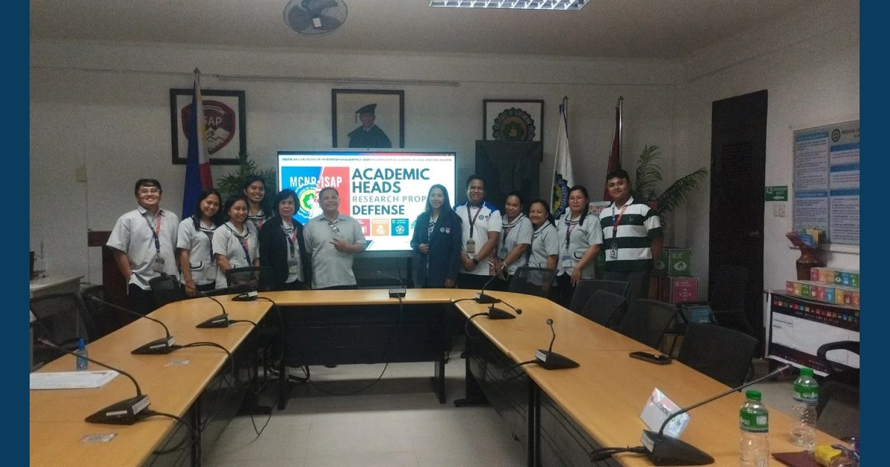

Leading Through Inquiry, Improving Through Evidence

The MCNP–ISAP Research and Development Center conducted the Academic Heads Research Proposal Defense on September 16, 2026, featuring research proposals from the College of Sciences and Teacher Education and the High School Department. The presenters received constructive feedback to strengthen their research designs and ensure that their studies respond to relevant educational and institutional concerns.
Read full article